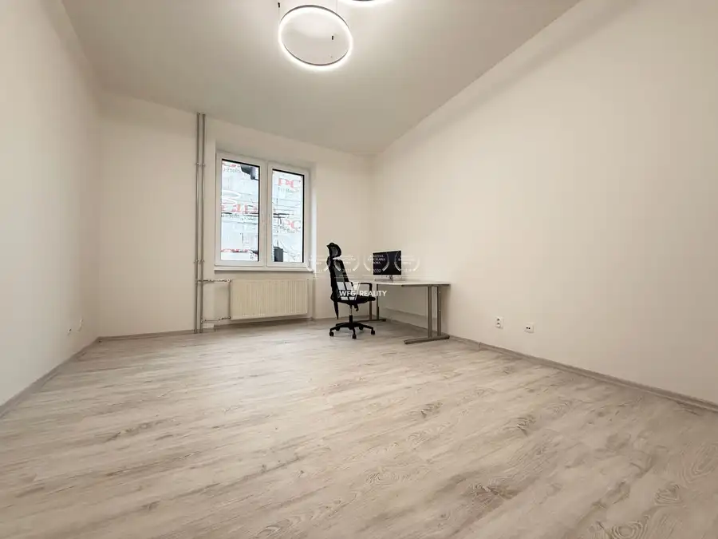
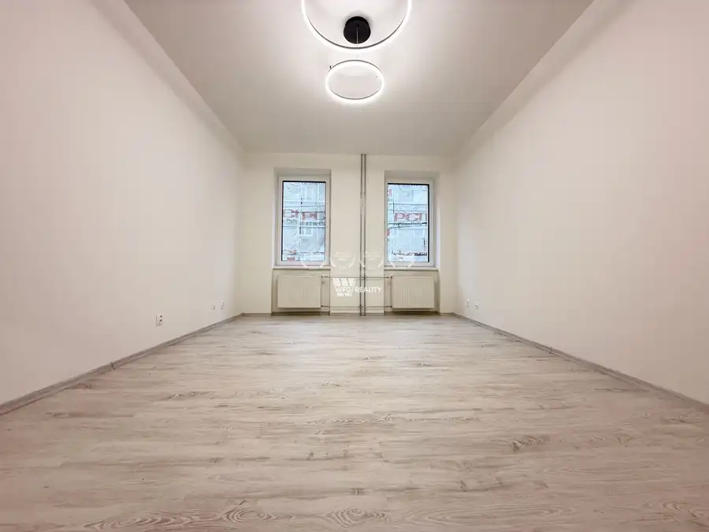
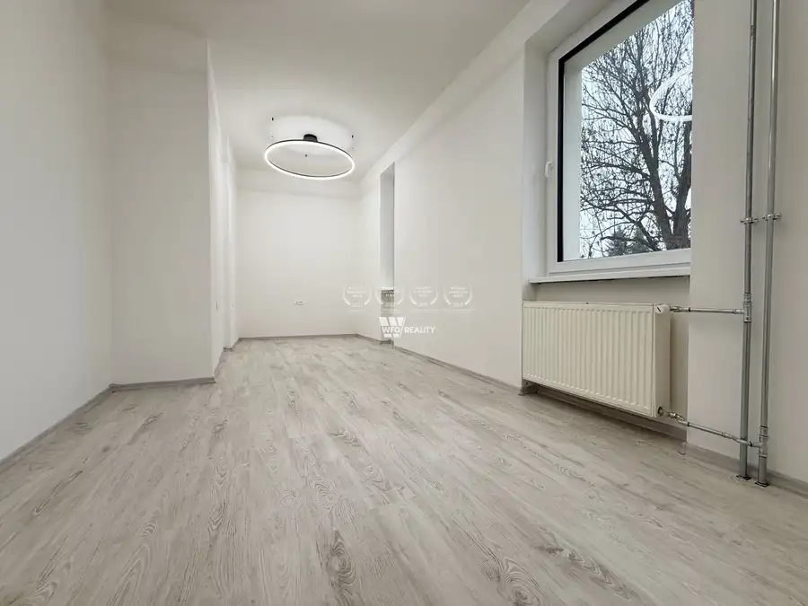
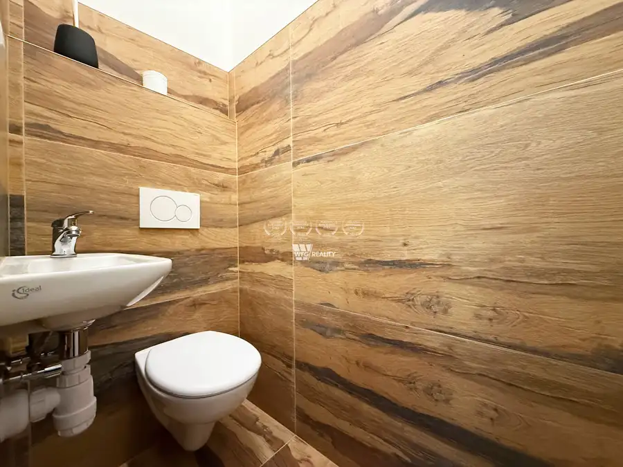
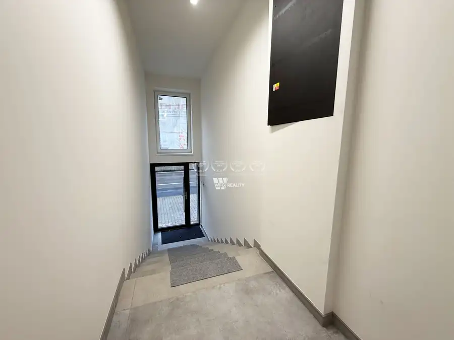
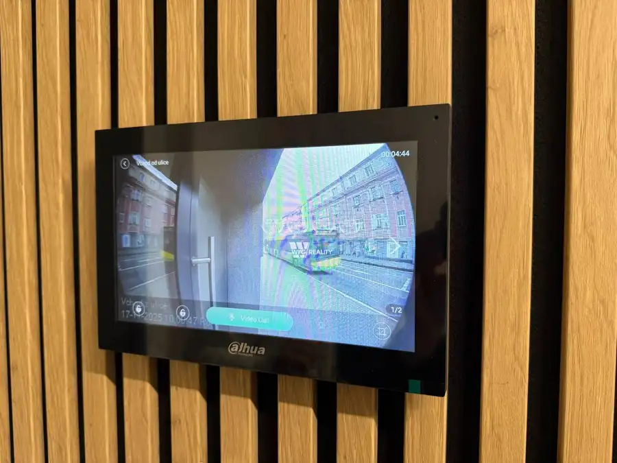
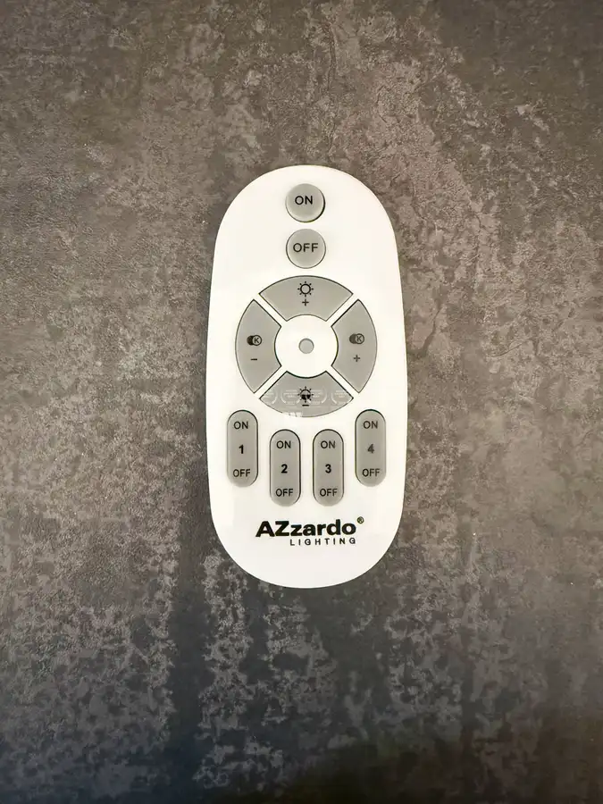
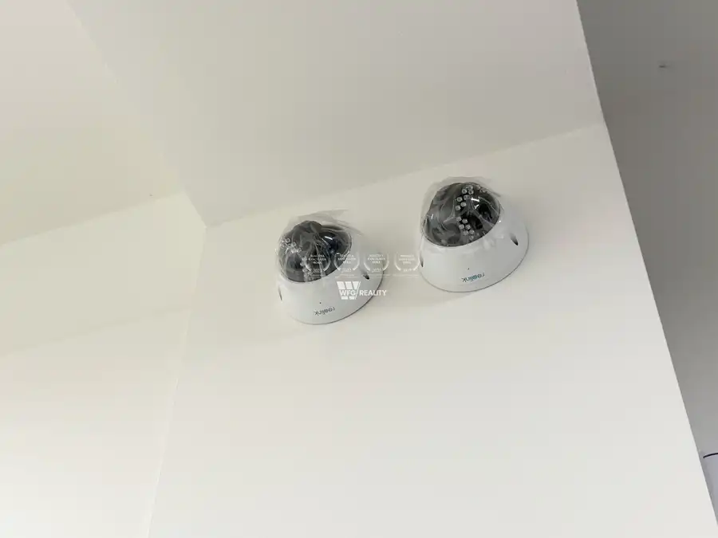
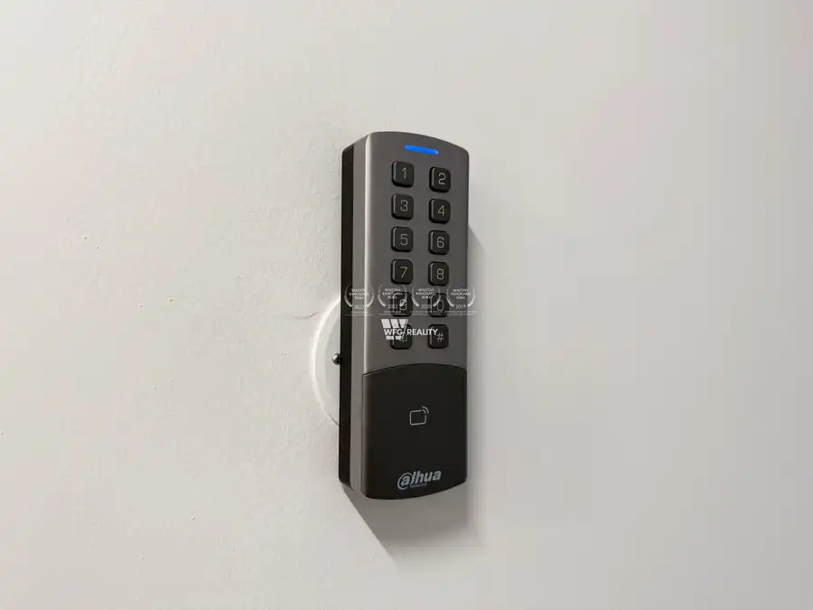

Prenájom kancelárskych priestorov vrátane 3x park. miest a skladu, centrum mesta
Žilina









- Plocha80.5 m²
- StavKompletná rekonštrukcia
- Energetická triedaC
O nehnuteľnosti
Ponúkame na prenájom kvalitné a moderne vybavené kancelárske priestory nachádzajúce sa priamo v centre mesta na adrese V. Spanyola 23. Priestory poskytujú komfortné pracovné zázemie a výbornú dostupnosť. Cena celkovej platby je 1 650 €/mesiac vrátane energií (z toho nájom 1 400 € a zálohové platby za energie vo výške 250 €) K prenájmu sú k dispozícii tri parkovacie miesta, pričom v prípade potreby je možné doprenajať aj ďalšie. Parkovanie je zabezpečené rampou na diaľkové ovládanie a vstupy sú auditovateľné. Priestory sú vybavené zabezpečovacím systémom s alarmom, pričom každý užívateľ si vie odblokovať vstup do budovy pomocou vlastného PIN kódu. Ovládanie vstupných dverí je možné aj na diaľku prostredníctvom telefónu (elektronický vrátnik). Dvere do kancelárií sú bezpečnostné. Samozrejmosťou je aj kamerový systém, pohybové čidlá na chodbách a UPC optické pripojenie.Interiér ponúka vysoký štandard – dvere sú odhlučnené a doplnené drevenými zárubňami pre lepšiu akustiku, zámky sú magnetické a kúrenie zabezpečuje úplne nový plynový kotol spolu s novými rozvodmi. Osvetlenie je riešené svetlami na diaľkové ovládanie s možnosťou regulácie intenzity a voľby medzi studeným či teplým odtieňom svetla.Súčasťou priestorov je aj praktická kuchynka vrátane chladničky a k dispozícii je taktiež priestranná suchá pivnica. Majiteľ vie nájomcovi poskytnúť 8 až 10 nastaviteľných pracovných stolov so stoličkami a v prípade záujmu aj zabezpečiť pravidelné upratovanie priestorov. Celá budova je odvodnená (oddrainážovaná), čo zabezpečuje jej dlhodobú suchosť a stabilitu.Po dohode s majiteľom je možné umiestniť vašu firemnú reklamu na fasádu budovy.K dispozícii ihneď.Ak Vás ponuka zaujala, neváhajte ma kontaktovať na tel. čísle +421 947 922 233 alebo na e-mail dolnikova@wfg.sk
Parametre
- Druh
- Kancelárie, administratívne priestory
- Dátum zverejnenia
- 12. 01. 2026
- Energetický certifikát budovy
- C
- Počet izieb / miestností
- 2
- Počet pivníc
- 1
- Počet vonkajších parkovacích miest
- 3
- Rok výstavby
- 2025
- Stav nehnuteľnosti
- Kompletná rekonštrukcia
- Terás
- 1
- Typ
- Prenájom
- Typ konštrukcie
- Tehlová
- Vybavenie
- Terasa, Pivnica, Vonkajšie parkovacie miesto
- Úžitková plocha
- 80.5 m²